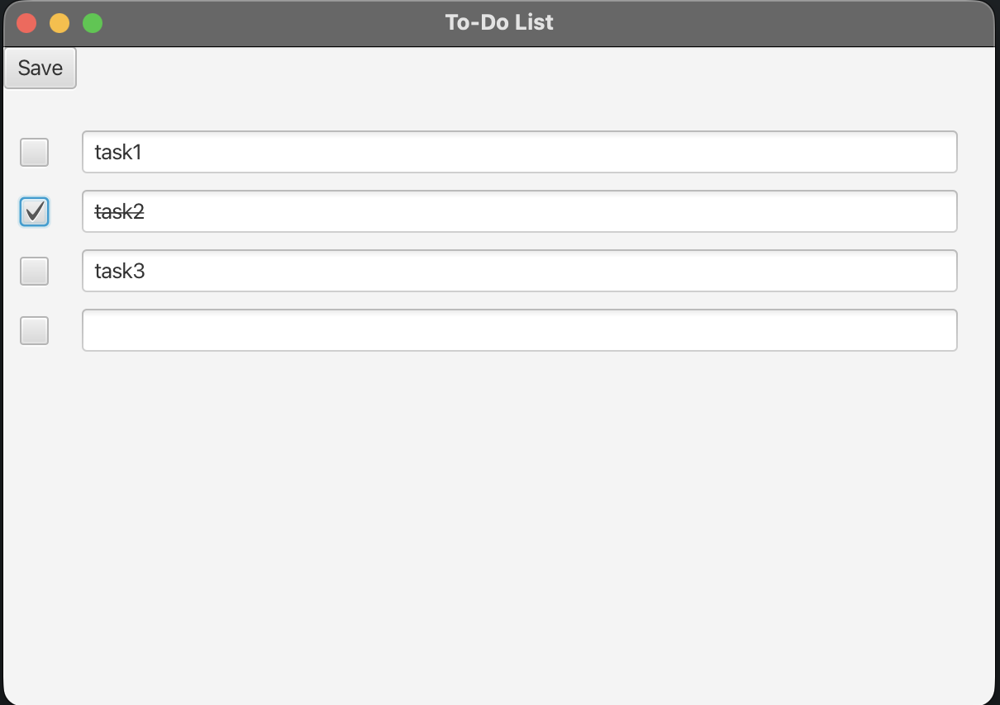

To-Do List

This is a simple To-Do List. It is coded with Java and JavaFX. I also added a version control with GitHub Actions (release-please). You have a checkbox and a textfield, when you check the box, you mark the task complete. If the task is completed it will cross out the task. You can save tasks, by clicking the save button in the top left corner. The tasks are saved to a txt file and when you reopen the application, it loads the tasks inside the file.
